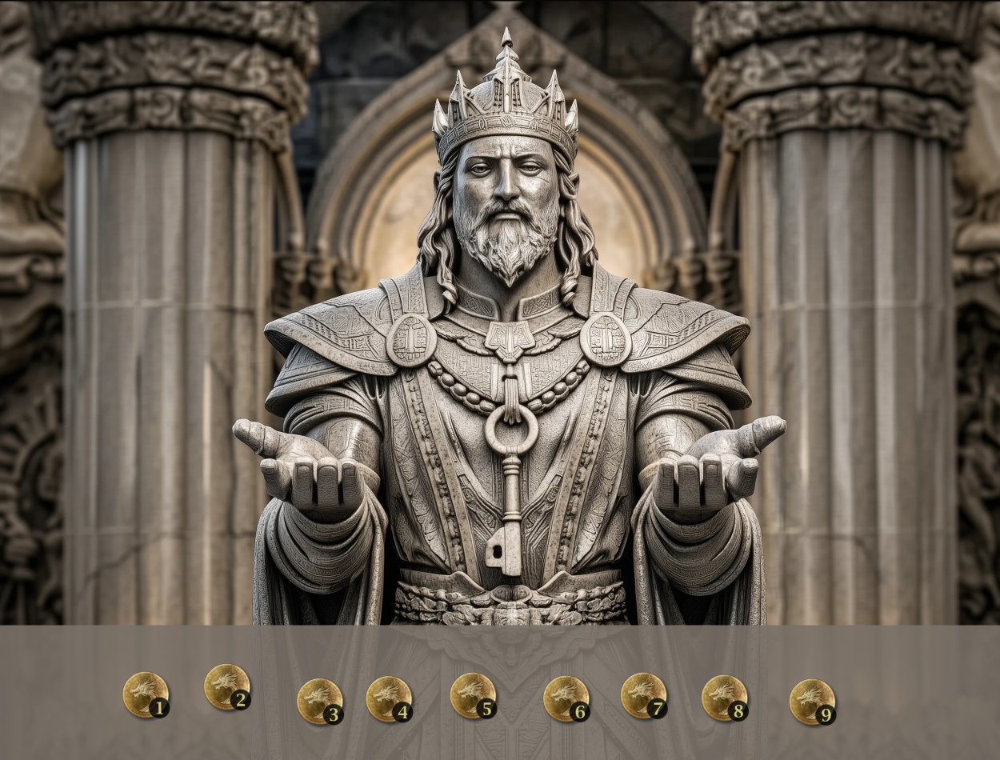

The coin puzzle challenges the players to find which of the 9 coins is counterfeit by placing coins in the hands of the statue. A counterfeit coin is lighter than the rest. When coins are placed in the statue's hands, it will raise the hand holding the lighter group. The players get only two attempts to identify the false coin.
First attempt: Divide the 9 coins into three groups of three. Place one group in each of the statue's hands and leave the third group on the table. If the statue raises one hand, that group contains the false coin. If neither hand rises, the false coin is in the group left on the table.
Second attempt: Take the group identified in the first attempt and split it: place one coin in each of the statue's hands and leave the third on the table. If the statue raises a hand, that coin is the counterfeit. If neither hand rises, the coin left on the table is the counterfeit.